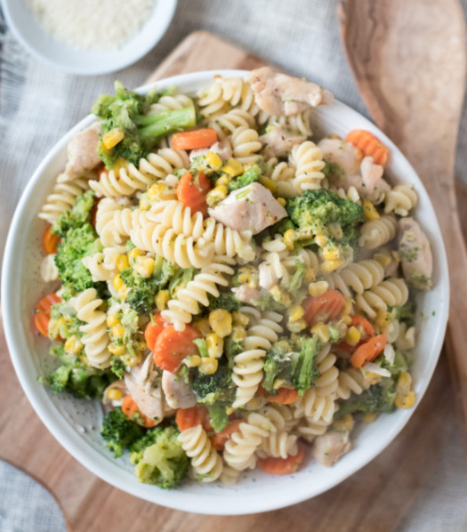

Specials

Chicken Voila
Tender chicken, rotini, and mixed veggies in a creamy Ranch-Parmesan sauce. Hearty, comforting, and packed with flavor in every bite.
Pasta Marinara (Carmine's)
Al dente spaghetti, rigatoni, or penne tossed in Carmine’s signature marinara—slow-simmered with plum tomatoes, garlic, basil, and olive oil. Finished with fresh herbs and a sprinkle of Romano. Classic and comforting.
Penne Alla Vodka (Carmine's)
Penne tossed in a rich tomato-vodka sauce with garlic, basil, chili flakes, and a splash of cream. Finished with Romano cheese and fresh herbs for a bold, velvety bite.

Other Pastas

German Sausage Bowtie Pasta
Sautéed onions, mushrooms, and sausage simmered with bowtie pasta, tomatoes, cream, and chicken broth—topped with melted cheddar and fresh herbs. Rich, hearty, and one-pan easy.
Beef Bowtie Pasta
Savory ground beef tossed with bowtie pasta in a creamy cheddar-Parmesan sauce, finished with a touch of paprika and fresh parsley. Classic comfort with bold flavor.
King Crab Capellini with Chili, Lime, and Green Onion (HC pg 32)
Delicate capellini tossed with sweet Alaskan king crab, garlic, chili, and green onion in a white wine and lime sauce. Finished with fresh parsley and a drizzle of olive oil for a bright, luxurious bite.
One Pan Pizza
A quick stovetop pizza with a no-knead dough base, topped with marinara, melty cheese, and optional pepperoni—all cooked in a single pan in just 5 minutes.